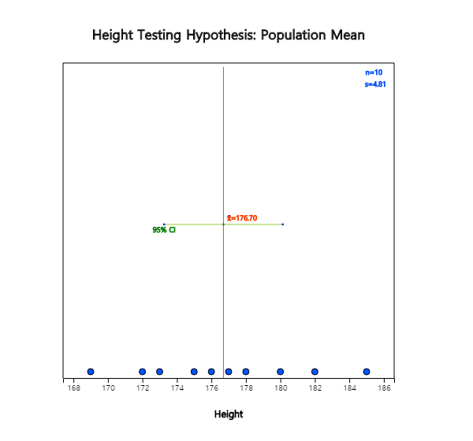

Examples of testing hypothesis for a population mean are as follows.
- The weight of a cookie bag is indicated as 200g. Would there be enough cookies as the indicated weight?
- At a light bulb factory, a newly developed light bulb advertises a longer bulb life than the past one. Is this propaganda reliable?
- Immediately after completing this year's academic test, students said that there will be 5 points increase in the average English score higher than last year. How can you investigate if this is true?
Testing hypothesis is the answer to the above questions (hypothesis). That is, the testing hypothesis is to decide statistically which hypothesis is to use for the two hypotheses about the unknown population parameter using samples. In this section, we examine the test of the population mean, population variance, and population proportion which are most commonly used in testing hypothesis.
The following example explains the theory of testing hypothesis of the population mean in single population.
Example 7.1.1
At a light bulb factory, the average life expectancy of a light bulb made by a conventional production method is known
to be 1500 hours and the standard deviation is 200 hours. Recently, the company is trying to introduce a new production method,
with the average life expectancy of 1600 hours for light bulbs. To confirm this argument, 30 samples were taken from
the new type of light bulbs by simple random sampling and the sample mean was \(\overline x \) = 1555 hours.
Can you tell me that the new type of light bulb has the average life of 1600 hours?
Answer
A statistical approach to the question of this issue is first to make two assumptions about the different arguments
for the population mean μ . Namely,
$$ \small
\begin{multline}
\shoveleft H_0 : μ = 1500 \\
\shoveleft H_1 : μ = 1600
\end{multline}
$$
\(\small H_0\) is called a null hypothesis and \(\small H_1\) is an alternative hypothesis.
In most cases, the null hypothesis is defined as an ‘existing known fact’, and the alternative hypothesis is defined as
‘new facts or changes in current beliefs’. So when choosing between two hypotheses, the basic idea of testing hypothesis
is 'unless there is a significant reason, we accept the null hypothesis (current fact) without choosing the alternative
hypothesis (the fact of the matter). This idea of testing hypothesis is referred to as a ‘conservative decision making’.
A common sense criterion for choosing between two hypotheses would be 'which population mean of two hypothesis is
closer in distance to the sample mean'. Based on this common sense criteria which uses the concept of distance,
the sample mean of 1555 is closer to \(\small H_1 : μ = 1600\) so the alternative hypothesis will be chosen.
A statistical testing hypothesis is based not only on this common sense criteria, but also on the sampling distribution of \(\overline X\).
In other words, the statistical testing hypothesis is to select a critical value \(C\) based on the sampling distribution theory and to make a decision rule as follows:
\( \small
\qquad \text { ‘If \(\overline X\) is smaller than C, then the null hypothesis \(H_0\) will be chosen, else reject \(H_0\)’}
\)
The area of {\(\small \overline X < C\)} is called an acceptance region of \(\small H_0\) and the area {\(\small \overline X ≥ C\)} is called
a rejection region of \(\small H_0\) (<Figure 7.1.1>).
<Figure 7.1.1> Acceptance and rejection region of \(H_{0}\)
If a hypothesis is chosen by this decision rule, there are always two possible errors in the decision.
One is a Type 1 Error which accepts \(\small H_1\) when \(\small H_0\) is true,
the other is a Type 2 Error which accept \(\small H_0\) when \(\small H_1\) is true.
These errors can be summarized as Table 7.1.1.
Table 7.1.1 Two types of errors in testing hypothesis
Actual \(\small H_0\) is true
Actual \(\small H_1\) is true
Decision : \(\small H_0\) is true
Correct
Type 2 Error
Decision : \(\small H_1\) is true
Type 1 Error
Correct
If you try to reduce one type of error when the sample size is fixed, then the other type of error is increasing.
That is why we came up with a conservative decision making method that defines the null hypothesis \(\small H_0\)
as 'past or present facts' and 'accept the null hypothesis unless there is a significance evidence for the
alternative hypothesis.' In this conservative way, we try to reduce the type 1 error as much as possible that selects
\(\small H_1\) when \(\small H_0\) is true, which would be more risky than the type 2 error. Testing hypothesis
determines the tolerance for the probability of the type 1 error, usually 5% or 1% for rigorous test,
and use the selection criteria that satisfy this limitation. The tolerance for the probability that this
type 1 error will occur is called the significance level and is often expressed as α.
The probability of the type 2 error is expressed as β.
If the significance level is established, the decision rule for the two hypotheses can be tested using the
sampling distribution of all possible sample means in Chapter 6. <Figure 7.1.2> shows the distribution
of populations for two hypotheses, and the distribution of all possible sample means for each population.
<Figure 7.1.2> Testing Hypothesis
If the population corresponds to the distribution of \(\small H_0\) : μ = 1500, the sampling distribution of
all possible sample means is approximated as \(\small N(1500,200^2 )\) by the central limit theorem.
If the population corresponds to the distribution of \(\small H_1\) : μ = 1600, the sampling distribution of
all possible sample means is approximated as \(\small N(1600,200^2 )\). The standard deviation for each population is
assumed to be 200 from a historical data. Then the decision rule becomes as follows:
\( \small
\qquad \text {‘If \(\overline X < C\), then accept \(H_{0}\), else accept \(H_{1}\) (i.e. reject \(H_{0}\) )’}
\)
In Figure 7.1.2, the shaded area represents the probability of the type 1 error. If we set the significance level,
which is the tolerance level of the type 1 error, is 5%, i.e. \(\small P(\overline X < C) = 0.95\), \(C\)
can be calculated by finding the percentile of the normal distribution \(\small N(1500,\frac{200^2}{30})\) as follows:
In this problem, the observed sample mean of the random variable \(\small \overline X\) is
\(\overline x\)= 1555 and \(\small H_0 \) is accepted. In other words, the hypothesis of
\(\small H_0 \) : μ = 1500 is judged to be correct, which contradicts the result of
common sense criteria that \(\overline x\) = 1555 is closer to \(\small H_1 \) : μ = 1600
than \(\small H_0 \) : μ = 1500. This result can be interpreted that the sample mean
of 1555 is not a sufficient evidence to reject the null hypothesis by a conservative decision making method.
The above decision rule is often written as follows, emphasizing that it is the result from a conservative decision making method.
\( \small
\qquad \text {‘If \(\overline X\) < 1560.06, then do not reject \(H_0\), else reject \(H_0 \).’}
\)
In addition, this decision rule can be written for calculation purpose as follows.
\( \small
\qquad \text {‘If \(\frac{\overline X - 1500}{\frac {200}{\sqrt{30}}}\), then accept \(H_0\) ,
else reject \(H_0\).’}
\)
In this case, since \(\overline x\) = 1555, \(\frac{1555 - 1500}{\frac {200}{\sqrt{30}}}\)
and it is less than 1.645. Therefore, we accept \(\small H_0\).
Since the testing hypothesis by the conservative decision making is only based on the probability of
the type 1 error as seen in [Example 7.1.1], even if the alternative hypothesis is \(H_1 : μ > 1500\),
we will have the same decision rule.
Generally, there are three types of alternative hypothesis in the testing hypothesis for the population mean as follows.
$$
\begin{align}
& 1)\quad H_1 : \mu \gt \mu_0 \\
& 2)\quad H_1 : \mu \gt \mu_0 \\
& 3)\quad H_1 : \mu \ne \mu_0 \\
\end{align}
$$
Since 1) has the rejection region on the right side of the sampling distribution of all possible sample means
under the null hypothesis, it is called a right-sided test. Since 2) has the rejection region on the left side
of the sampling distribution, it is called a left-sided test. Since 3) has rejection regions on both sides
of the sampling distribution, it is called a two-sided test. The decision rule for each type of three
alternative hypothesis are summarized in Table 7.1.2 when the population standard deviation is known and
α is the significance level.
Table 7.1.2 Testing hypothesis for the population mean - known σ case
If \( \left | \frac {\overline X - \mu_0}{ \frac {\sigma}{\sqrt{n}} } \right | > z_{α/2} \), then reject \( H_0 \)
Note: The \(H_0\) of 1) can be written as \(\; H_0 : \mu \le \mu_0 \) , 2) as \(\; H_0 : \mu \ge \mu_0 \)
The following expression used for the decision rule is referred to as a test statistic for testing hypothesis of the population mean.
$$
\frac {\overline X - \mu_0}{ \frac {\sigma}{\sqrt{n}} }
$$
The population standard deviation σ of the test statistic is usually unknown. However, if the sample is large enough
(approximately 30 or more), the hypothesis test can be performed using the sample standard deviation \(S\)
instead of the population standard deviation σ.
In [Example 7.1.1], if the sample mean is either 1555 or 1540, the null hypothesis can not be rejected,
but degrees of evidence that the null hypothesis is not rejected are different.
The degree of evidence that the null hypothesis is not rejected is measured by calculating the probability of the type 1 error
when the observed sample mean value is considered as the critical value for decision, which is called the \(p\)-value.
That is, the \(p\)-value indicates where the observed sample mean is located among all possible sample means by
considering the location of the alternative hypothesis. In [Example 7.1.1], the \(p\)-value for \(\overline X\) = 1540
is the probability of sample means which is greater than \(\overline X\) = 1540 by using \(N(1500, \frac{200^2}{30} )\).
The higher the \(p\)-value, the stronger the reason for not being rejected. If \(H_0\) is rejected, the smaller
the \(p\)-value, the stronger the grounds for being rejected. Therefore, if the \(p\)-value is less than the significance level
considered by the analyst, then \(H_0\) is rejected, because it means that the sample mean is in the rejection region.
Statistical packages provide this \(p\)-value.
Decision rule using \(p\)-value
If the \(p\)-value is less than the significance level, then \(H_0\) is rejected, else \(H_0\) is accepted.
The calculation of the \(p\)-value depending on the type of the alternative hypothesis is summarized as in Table 7.1.3.
If \( \overline X > \mu_0 \), then \( 2 P ( \overline X > {\overline x}_{obs} ) \), else \( 2 P ( \overline X < {\overline x}_{obs} ) \)
Note \( {\overline x}_{obs} \) is the observed sample mean
If the population standard deviation σ is unknown and the population is a normal distribution,
the test statistic
$$
\frac {\overline X - \mu_0}{ \frac {S}{\sqrt{n}} }
$$
is a \(t\) distribution with \((n-1)\) degrees of freedom. The testing hypothesis for the population
mean can be done as Table 7.1.4 which replace the \(Z\) distribution with the \(t\) distribution in
Table 7.1.2 and σ with \(S\).
Table 7.1.4 Testing hypothesis for a population mean - unknown σ case
(Assume that the population is a normal distribution)
If \( \left | \frac {\overline X - \mu_0}{ \frac {S}{\sqrt{n}} } \right | > t_{n-1; α/2} \), then reject \( H_0 \)
Note: The \(H_0\) of 1) can be written as \(H_0 : \mu \le \mu_0 \) , 2) as \(H_0 : \mu \ge \mu_0 \)
If the sample size is large enough (approximately 30 or more), the \(t\) distribution is
approximated to the standard normal distribution, so the testing hypothesis in Table 7.1.4
can be performed using the standard normal distribution, \(Z\) , instead of \(t\) distribution.
Example 7.1.2
The weight of a bag of cookies is supposed to be 250 grams. Suppose the weight of all bags of cookies is a normal distribution. In the survey of 100 samples of bags which were randomly selected, the sample mean was 253 grams and the standard deviation was 10 grams.
1) Test hypothesis whether the weight of the bag of cookies is 250g or larger and find the \(p\)-value. α = 1％
2) Test hypothesis whether or not the weight of the bag of cookies is 250g and find the \(p\)-value. α = 1％
3) Use 『eStatU』 to test the hypothesis above.
Answer
1) The hypothesis is a right tail test as \(\small H_0 : \mu; \) = 250,
\(\small H_0 : \mu; \) > 250. Since the sample size is large (\(n\)=100), we can use
\(Z\) distribution instead of \(t\) distribution. Decision rule is as follows.
Since \( \frac {253 - 250}{ \frac {10}{\sqrt{100}} } \) = 3 and \(z_{0.01}\)= 2.326, \(\small H_0 \) is rejected.
We can write the above decision rule as follows:
Since the \(p\)-value is the probability of Type 1 error when the sample mean is the critical value.
it can be calculated by the probability of ( \(\small P( \overline X\) > 253). Since the distribution of
\(\small \overline X\) is approximately \(\small N(250, \frac{100}{100} ) \) when \(\small H_0 : \mu \) = 250 is true,
the \(p\)-value is as follows:
\( \small
\qquad \qquad p\text{-value} = P( \overline X \gt 253) = P( Z \gt \frac{253-250}{\frac{10}{10}} ) = P( Z \gt 3) = 0.0013
\)
2) The hypothesis is a two-sided test as \(\small H_0 : \mu = 250, H_1 \ne 250 \). Since the sample size is
large (\(n\)=100), we can use the \(Z\) distribution instead of the \(t\) distribution.
Decision rule is as follows.
Since \( \frac {253-250} {\frac{10}{10}} = 3 \) and \(z_{0.005}\) = 2.575, \(\small H_0 \) is rejected.
The \(p\)-value can be calculated as follows:
\( \small
\qquad \qquad p\text{-value} = 2 P(\overline X \gt 253) = 2 P(\overline X \gt \frac{253-250}{\frac{10}{10}} = 2 P( Z \gt 3) = 0.0026
\)
3) In 『eStatU』 menu, select 'Testing Hypothesis μ', enter 250 at the box of on [Hypothesis] and
select the alternative hypothesis as the right test in the window shown in <Figure 7.1.3>.
Check [Test Type] as Z test and check the significance level at 5%. At the [Sample Statistics],
enter sample size 100, sample mean 253, and sample variance \(10^2 = 100\).
For the Z test, you must enter the population variance, but you may enter the sample variance,
because the sample size is large enough.
<Figure 7.1.3> 『eStatU』 Testing Hypothes for μ
If you click the [Execute] button, the confidence Interval for μ is calculated and
the testing result using 『eStatU』 will appear as in <Figure 7.1.4>.
<Figure 7.1.4> 『eStatU』 Testing Hypothes for μ - Right Tail Test
If you select the two-tail test at [Hypothesis] of <Figure 7.1.3>, testing result using 『eStatU』 is as <Figure 7.1.5>.
<Figure 7.1.5> 『eStatU』 Testing Hypothes for μ - Two Tails Test
Example 7.1.3
When the sample size is 16 and the sample variance is 100 in [Example 7.1.2], test whether the average weight
of the cookie bags is 250g or greater and obtain the \(p\)-value. Check the result using 『eStatU』
Answer
Since the population standard deviation is unknown and the sample size is small, the decision rule
is as follows.
$$ \small
\begin{multline}
\shoveleft ‘\text{If } \frac {\overline X - \mu_0} {\frac {S}{\sqrt{n}} } > t_{n-1: α} , \text{ then reject } H_0 \text{ else accept } H_0 ’ \\
\shoveleft ‘\text{If } \frac {253 - 250}{ \frac {10}{\sqrt{16}} } > t_{16: 0.01} , \text{ then reject } H_0 \text{ else accept } H_0 ’ \\
\end{multline}
$$
Since the value of test statistic is \( \frac {253 - 250}{ \frac {10}{\sqrt{16}} } = 1.2 \),
and \(t_{15: 0.01} = 2.602\) , we accept \(\small H_0\). Note that the decision rule can be written as follows.
In <Figure 7.1.3> of 『eStatU』 , select the right-sided test of [Hypothesis], select the \(t\)-test
on [Test Type] and enter sample size \(n\) = 16, then the test result is as <Figure 7.1.6>
if you click the [Execute] button.
<Figure 7.1.6> Testing hypothesis for μ with \(t\) distribution using 『eStatU』
Since the \(p\)-value is the probability that \(t_{15}\) is greater than the test statistics 1.200,
the \(p\)-value is 0.124 by using the module of \(t\) distribution in 『eStatU』.
Example 7.1.4
(Heights of college students)
10 male students are sampled in a university and examined their heights as follows:
172 175 178 182 176 180 169 185 173 177 (Unit cm)
Ex ⇨ eBook ⇨ EX070104_Height.csv.
Test the hypothesis whether the population mean is 175cm or greater with the significance level of 5%.
Answer
After entering data on a sheet as shown in <Figure 7.1.7> in 『eStat』 , clicking the testing
hypothesis for the population mean and then clicking variable name V1 for 'Analysis Var' in variable
selection box will result in a dot graph with 95% confidence interval as in <Figure 7.1.8>.
<Figure 7.1.7> Data input

<Figure 7.1.8> Dot graph and confidence interval
If you click [Histogram] button from option menu below the graph as in <Figure 7.1.9>,
the corresponding histogram is appeared as in <Figure 7.1.10>. The histogram together with the normal distribution graph can be used to check whether the sample data comes from a normal distribution. The options such as [Normal Q-Q Plot] and [Normality Test] will be explained in chapter 11.
<Figure 7.1.9> Options for testing hypothesis of population mean
<Figure 7.1.10> Histogram and Normal Distribution
Enter \(μ_0 \) = 175 at the box of option menu, select the right sided test and the significance level of 5%. Then press the [t-Test] button to display the hypothesis test graph as shown in <Figure 7.1.11> and a test result in the Log Area as in <Figure 7.1.12>.
<Figure 7.1.11> Testing hypothesis for population mean
<Figure 7.1.12> Testing hypothesis for population mean
You can select Z-test in the option menu, but you have to enter the population standard deviation σ in this case.
Practice 7.1.1
The following data are weights of the 7 employees randomly selected who are working in the shipping department of a wholesale food company.
154, 186, 159, 174, 183, 163, 181 (unit pound)
Ex ⇨ eBook ⇨ PR070101_Height.csv.
Based on this data, can you say that the average weight of employees working in the shipping department is 160 or greater than 160? Use the significance level of 5%.
The testing hypothesis of the population mean using the sample variance requires the assumption
that the population is normally distributed. Testing whether sample data come from a normal population
is called a goodness of fit test which will be explained in Chapter 11.
In this section, we looked at the testing hypothesis for the population mean when the sample size
is already given and only consider the significance level of the type 1 error. In this case,
if we try to reduce the probability of the type 1 error, then the probability of the type 2 error
will be increased and we can not reduce both types of errors at the same time.
Therefore, if the sample size was predetermined, or if data were given, only the type 1 error
was considered as a conservative decision making to test the hypothesis. However, if the sample size
can be selected by a researcher, there is a testing hypothesis that considers both types of errors
together which will be explained in detail in section 7.4.
Multiple Choice Exercise
*** Choose one answer and click [Submit] button
7.1 What is the type 1 error?
7.2 Which hypothesis is accepted when the null hypothesis is rejected?
7.3 Which of the following statements is true?
7.4 What is the meaning of the significance level α = 0.05?
7.5 What is the critical value to reject the null hypothesis if the alternative hypothesis is right sided when the sampling distribution to test the population mean is the standard normal distribution?
7.6 If the null hypothesis is \(\small H_0 ; \mu = \mu_0 \),
what is the two-sided alternative hypothesis?
7.7 The following lists the sequence of a statistical hypothesis test. What's the right order?
a. Set a hypothesis.
b. Determine the significance level.
c. Determine whether or not to accept the hypothesis.
d. Calculate the test statistic.
e. Find the rejection region
7.8 Which of the following statements is incorrect?